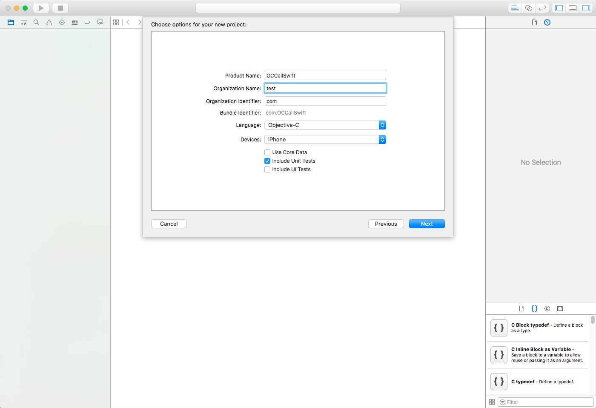
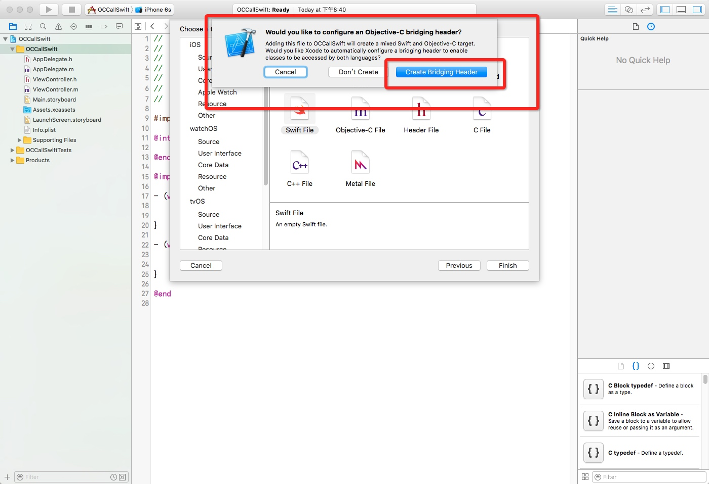
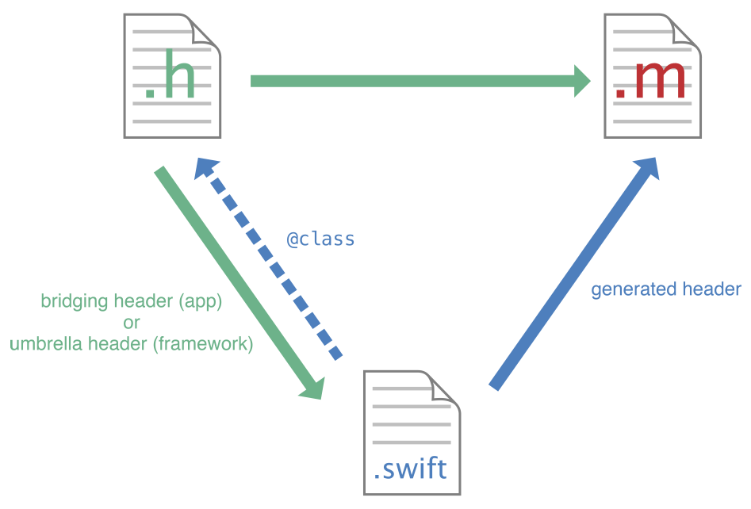
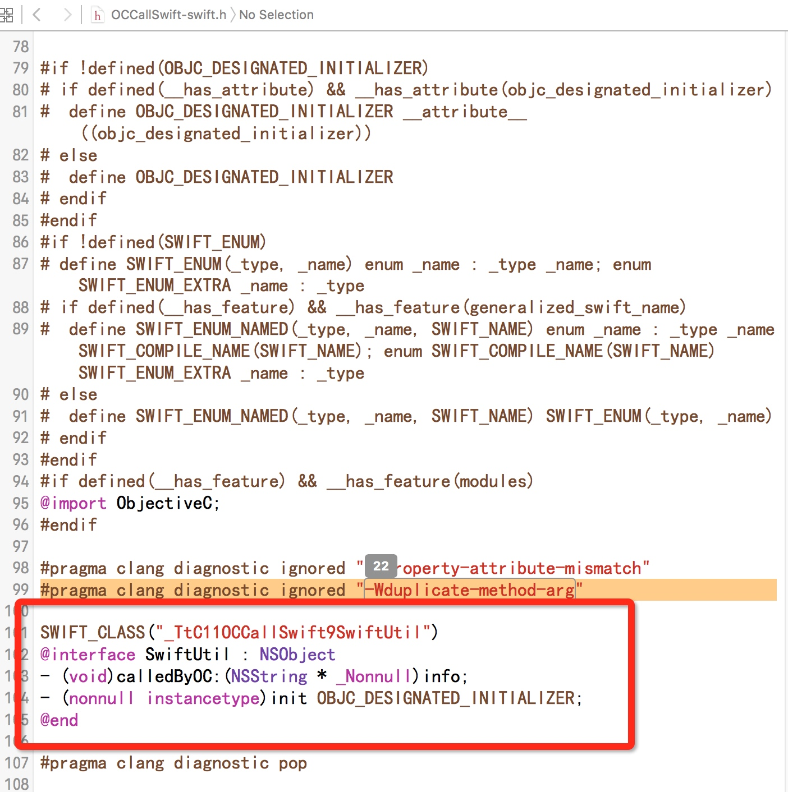

1、 创建新的OC项目工程，命名为OCCallSwift

2、 新建Swift文件，如果项目中没有Bridging header文件的话会提示你创建


OCCallSwift-Swift.h头文件

3、编写Swift文件代码方法
import Foundation
class SwiftUtil: NSObject {
func calledByOC(info:String) -> Void {
print("\(info) ,swift 方法被调用了")
}
}
4、编写Controller文件
导入头文件#import "OCCallSwift-swift.h"，头文件格式为 项目名称-swift.h，之后重新编译一下工程，之后就可以像调用普通类一样调用Swift方法了。
#import "ViewController.h"
#import "OCCallSwift-swift.h"
@interface ViewController ()
@end
@implementation ViewController
- (void)viewDidLoad {
[super viewDidLoad];
SwiftUtil* util = [[SwiftUtil alloc] init];
[util calledByOC:@"从OC 调用"];
}
- (void)didReceiveMemoryWarning {
[super didReceiveMemoryWarning];
}
@end